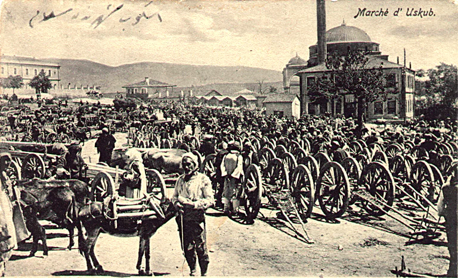
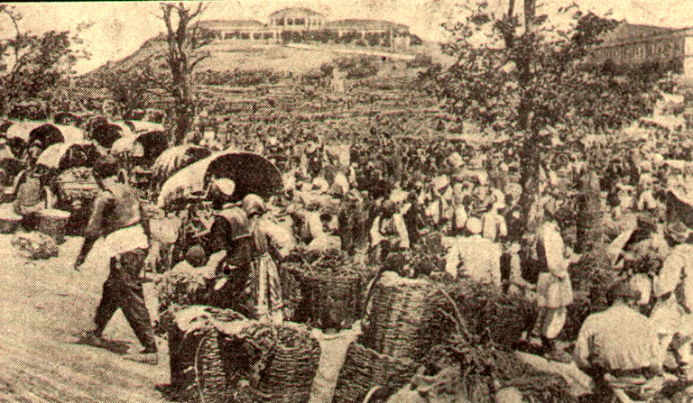
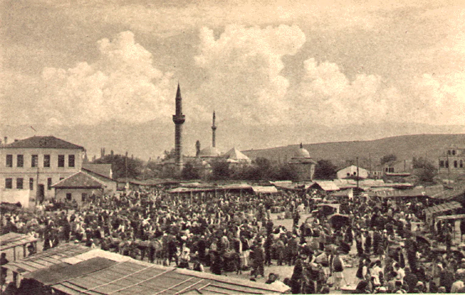
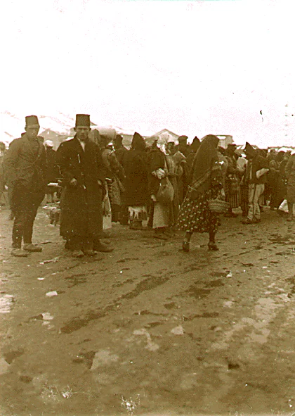
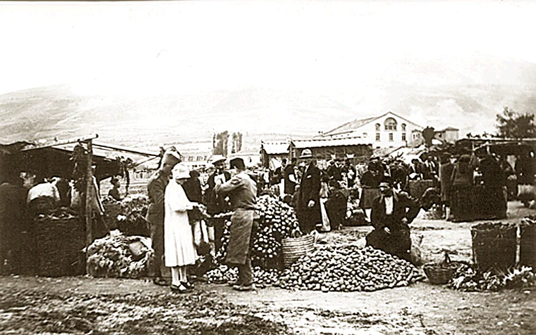

Скопље 1916 - 1917 панорама 1
Документи из Балканских ратова
- Година
- 1916-1917
- Трајање
- 00:11

Превозници на скопској пијаци испод градске тврђаве, наспрам турске поште. У задњем делу десно виде се Мустафа-пашина џамија и пошта. (19. век)

Пијаца у Скопљу на простору испред Хућумата (општине) и турске поште - 1902. година. У позадини лево је касарна. (крај 19. века)

Пијачни дан у Скопљу испред Хућумата (општине) и турске поште 1902. године. Иза је Мустафа-пашина џамија.

Скопска пијаца испод градске тврђаве - 19. век.

Скопска пијаца испод градске тврђаве - 19. век.

Превозници на градском тргу - 19. век.

Пијаца у Скопљу на простору испред Хућумата (општине) и турске поште - 1902. година. У позадини се види касарна.

Бит пазар, пијаца пољопривредних производа. У позадини су Исхак-бегова џамија и турбе. (крај 19. века, почетак 20. века)

Бит пазар, крај 19. века.

Пијаца у старој чаршији - крај 19. века.

Бит пазар. У позадини су Исхак-бегова џамија и турбе.
- 19. век.

Бит пазар. У позадини су Исхак-бегова џамија и турбе.
- 19. век.

Део Бит пазара - пијаца грнчарије.
(почетак 20. века)

Грађани и сељаци на Бит пазару - тренутак из пијачних дана (почетак 20. века)

Продавац кромпира - тренутак из пијачних дана
(око 1930. године)

Бит пазар - 1920-их.

Бит пазар - 1950-их.

Бит пазар - 1950-их.


Документи из Балканских ратова
 Аквадукт4 разгледнице
Аквадукт4 разгледнице Кале30 разгледница
Кале30 разгледница Мостови60 разгледница
Мостови60 разгледница Кеј58 разгледница
Кеј58 разгледница Трг46 разгледница
Трг46 разгледница Објекти66 разгледница
Објекти66 разгледница Хришћански храмови19 разгледница
Хришћански храмови19 разгледница Муслимански објекти33 разгледнице
Муслимански објекти33 разгледнице Официрски дом29 разгледница
Официрски дом29 разгледница Позориште28 разгледница
Позориште28 разгледница Железничка станица13 разгледница
Железничка станица13 разгледница Школе36 разгледница
Школе36 разгледница Паркови12 разгледница
Паркови12 разгледница Пијаце18 разгледница
Пијаце18 разгледница Улице38 разгледница
Улице38 разгледница Панорама I60 разгледница
Панорама I60 разгледница Панорама II30 разгледница
Панорама II30 разгледница Колажи55 разгледница
Колажи55 разгледница Поплаве9 разгледница
Поплаве9 разгледница Земљотрес27 разгледница
Земљотрес27 разгледница Скопље 200026 разгледница
Скопље 200026 разгледница